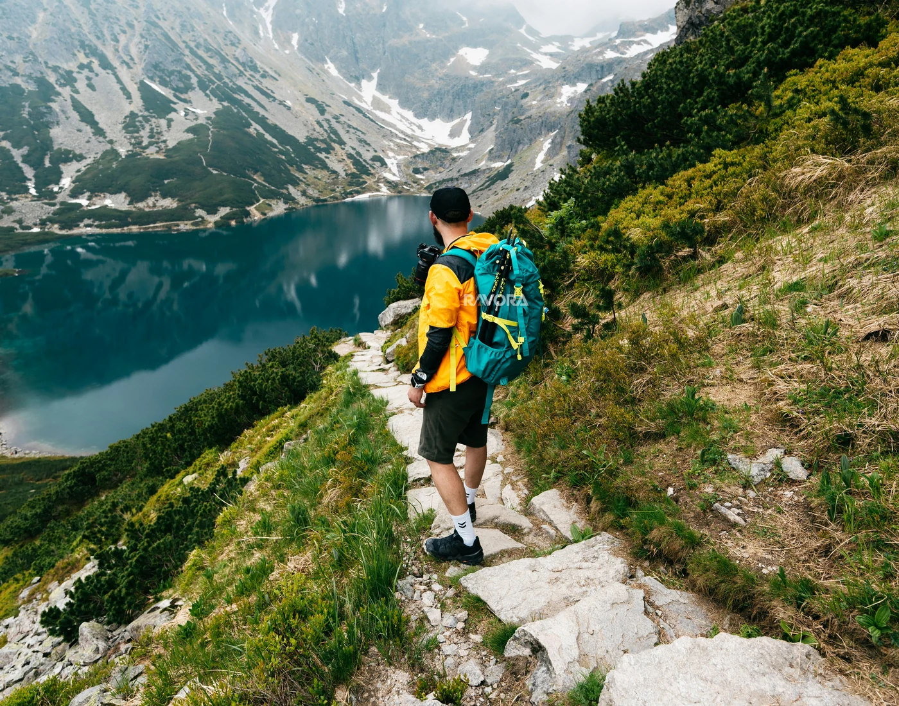

Bugün
Marka dili, tasarım sistemi ve teknik ürün geliştirme yaklaşımını sağlam bir temel üzerinde kuruyoruz.
Ravora; işlevsellik ile estetiğin, dayanıklılık ile zamansız tasarımın kesiştiği noktada güven veren bir outdoor markası oluşturmak amacıyla yola çıktı.

Teknik outdoor giyim ve fonksiyonel tekstil odağında; kumaş, dikiş, ergonomi ve kullanım senaryolarını bütüncül bir tasarım disipliniyle ele alıyoruz.
Her parçanın yalnızca zorlu doğa şartlarında değil, günlük şehir kullanımında da koruma, rahatlık ve sade bir görünüm sunmasını hedefliyoruz. Ravora'nın çıkış noktası; geçici trendler yerine işini iyi yapan, uzun ömürlü ve güven veren giysiler tasarlama fikridir.
Marka dili, tasarım sistemi ve teknik ürün geliştirme yaklaşımını sağlam bir temel üzerinde kuruyoruz.
Nitelikli ürün, mağazacılık ve iletişim standardıyla güvenilir bir outdoor markası olmayı hedefliyoruz.
Abartılı vaatler yerine açık bilgi, tutarlı kalite ve gerçek kullanım ihtiyacına odaklanıyoruz.
Dayanıklı, işlevsel, zamansız ve yüksek kaliteli teknik outdoor ürünlerini tasarım disipliniyle geliştirerek kullanıcılara farklı koşullarda koruma, rahatlık ve hareket özgürlüğü sunmak.
Yenilikçi malzeme yaklaşımıyla dayanıklılığı, estetiği ve işlevselliği aynı standartta buluşturan; uzun vadeli ve güvenilir bir outdoor markası olmak.
Zamana, aşınmaya ve değişken kullanım koşullarına karşı nitelikli malzeme ve işçilik.
İşlevselliği gölgelemeyen, net, modern ve uzun süre güncel kalan tasarım dili.
Her detayın somut bir ihtiyaca hizmet ettiği performans odaklı ürün yaklaşımı.
Uzun ömürlü kullanım ve kaynakların bilinçli değerlendirilmesi.
Bir tasarımın ilk görevi kullanıcıyı desteklemek ve gerçek bir ihtiyaca yanıt vermektir.
Kumaştan dikişe, bileşenden son kontrole kadar kalite standardı korunur.
Marka dili abartılı vaatlere değil, anlaşılır bilgiye ve tutarlı uygulamaya dayanır.
Geçici eğilimler yerine güncelliğini ve kullanım değerini koruyan ürünler tasarlanır.
Kurumsal talepleriniz ve genel bilgi ihtiyaçlarınız için bizimle doğrudan iletişime geçebilirsiniz.